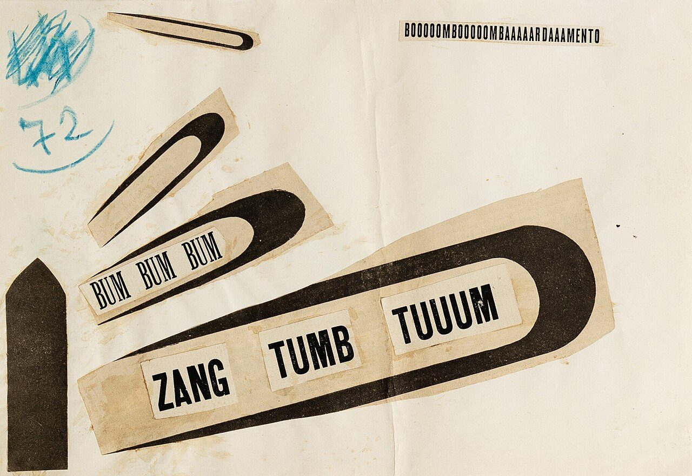

References / Illustration / 487
Zang Tumb Tuuum, collage
F. T. Marinetti cut words and black hairpin shapes out of printed matter from his book Zang Tumb Tumb and pasted them into a fanning bombardment of sound.
- Source
- Wikimedia Commons: Filippo Tommaso Marinetti - ZANG TUMB TUUUM 1915.jpg
- Creator
- Filippo Tommaso Marinetti
- Made
- 1915
- Style
- Italian Futurism (agent-proposed, not yet reviewed by a person)
- Moods
- Loud, aggressive, exuberant
- Evidence
- Downloaded and inspected the Commons file (original 2048 × 1408 px; a 1280 × 880 px rendering was inspected and stored). Commons gives the source as the Sotheby’s sale “Zang Tumb Tuuum: la révolution futuriste” (Paris, 2021). The physical work is the single original collage offered there; its present owner is not known. The Sotheby’s lot page loads only with JavaScript, so its details come from a search summary and are not verified.
- Reviewed
- Rights
- Open license, stored. License: public domain. Rights policy

Context
The Commons description gives the full title of the poem as “BOOOOOMBOOOOOMBAAAAARDAAAMENTO. BUM BUM BUM. ZANG TUMB TUUUM” and describes the work as an original collage of typographical letters and shapes on paper. Wikimedia Commons.
According to a search summary of the Sotheby’s lot (not opened), the sheet measures about 21 × 31 cm, Marinetti numbered it in blue pencil, and he cut the fragments from the book Zang Tumb Tumb published in 1914.
Zang Tumb Tumb (1914) recounts the siege of Adrianople in the First Balkan War, which Marinetti reported on in 1912. Wikipedia: Zang Tumb Tumb.
Observed
- Three black hairpin or U shapes, cut from paper, fan out from the lower left, each larger than the one before; a fourth thin one sits at the top.
- Inside the largest, three pasted labels read “ZANG”, “TUMB”, and “TUUUM” in a heavy condensed grotesque, rising along the shape.
- Inside the middle one, “BUM BUM BUM” is set in a condensed serif at an angle.
- A narrow strip at upper right reads “BOOOOOMBOOOOOMBAAAAARDAAAMENTO” in small condensed capitals, horizontal.
- A black pointed shape like a shell or a tower stands at the lower left edge.
- Blue pencil scribble and the number “72” are at the upper left. The sheet is off-white, creased, and stained around the pasted parts.
Why it belongs
The work shows the grammar of words in freedom in its plainest form: shapes repeat and grow along a path, and the sound words ride along them like projectiles. Only black and the paper tone are used, so the motion comes entirely from the angles and the repetition.
The mix of a heavy grotesque, a condensed serif, and small capitals is typical of Marinetti’s pages.
Borrow
Put the loudest words inside a repeated shape that grows along a diagonal, so the shape carries the words.
Set each word of an onomatopoeic phrase in its own block, stepped upward.
Contrast one very long, very small line of type with a few huge words.
Measured
Machine-extracted by tools/image-traits.py on . Full measurement.
- Mean chroma
- 0.11
- Palette
- #e2dac8 39%
- #ece5d8 25%
- #dac5a2 13%
- #33281c 6%
- #221a11 4%
- #c6ae86 3%
- #463a2d 2%
- #dccfb6 2%

